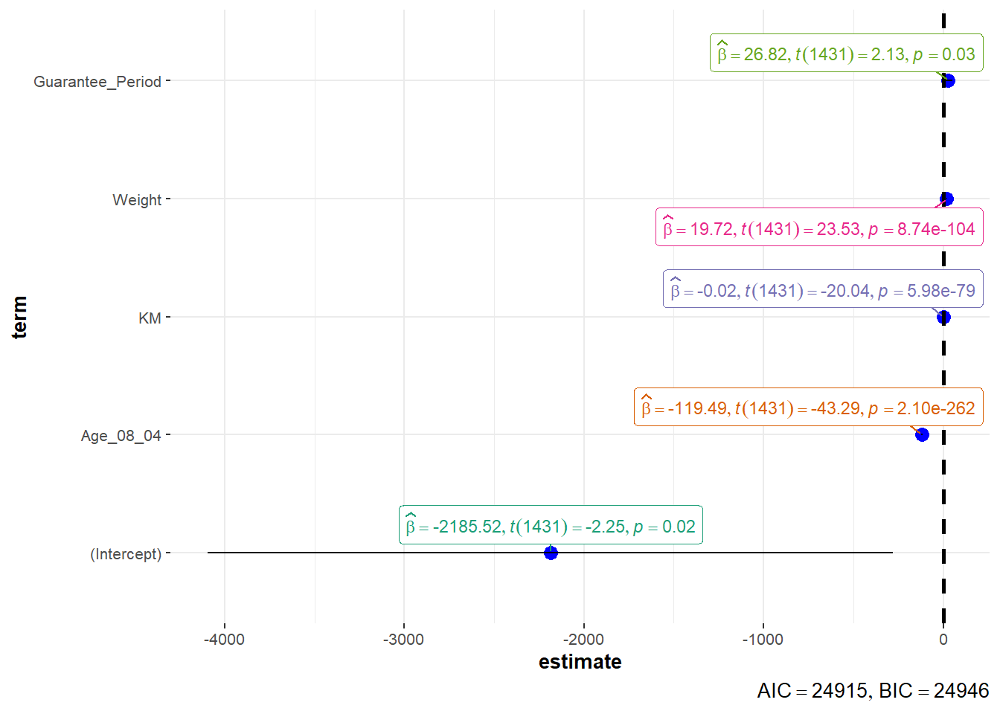

pacman::p_load(tidyverse, readxl, ggstatsplot, performance, parameters, see)Hands-on Exercise 4B
Visual Statistical Analysis
1 Overview
In this hands-on exercise, we will gain hands-on experience on using:
- ggstatsplot package to create visual graphics with rich statistical information;
- performance package to visualise model diagnostics; and
- parameters package to visualise model parameters
2 Getting Started
2.1 Import and Launch R packages
In this exercise, we will launch and use the following packages:
- ggstatsplot is an extension of ggplot2 package for creating graphics with details from statistical tests included in the information-rich plots themselves.
- To provide alternative statistical inference methods by default.
- To follow best practices for statistical reporting. For all statistical tests reported in the plots, the default template abides by the APA gold standard for statistical reporting.
- performance provide utilities for computing indices of model quality and goodness of fit, enabling assessment of model quality for different kinds of models
- parameters provide utilities for processing the parameters of various statistical models, including the computation of p-values, CIs, Bayesian indices and other measures for a wide variety of models.
- seehelps users to utilise visualization for more informative, communicable, and well-rounded scientific reporting
2.2 Import Data
We will import Exam_data.csv and ToyotaCorolla.xls into our R environment and save them as tibble data frames. These two datasets will be used in the following two sections respectively.
exam_data <- read_csv("data/Exam_data.csv")
car_resale <- read_xls("data/ToyotaCorolla.xls", "data")3 Visual Statistical Analysis with ggstatsplot
3.1 One-sample test: gghistostats()
In the code chunk below, gghistostats() is used to to build an visual of one-sample test on English scores.
set.seed(1234)
gghistostats(
data = exam_data,
x = ENGLISH,
type = "bayes",
test.value = 60,
xlab = "English Scores"
)
In this example, we are performing a hypothesis testing on whether the centrality measure of English score are different from the test.value “60”. We have also chosen to use the “Bayes” statistical approach. Using this approach, the default centrality parameter that will be computed is the Maximum a Posteriori (MAP) estimator, i.e., the \(\mu_{MAP}\) of 74.74 is the most likely value of population mean based on the observed data and prior knowledge.
The Student’s t-test is run and the output formula shows the following:
- The Bayes Factor \(BF_{01}\) is a measure used in Bayesian hypothesis testing to quantify the strength of evidence against the null hypothesis \(H_0\) in favour of the alternative hypothesis \(H_1\) . Specifically, \(BF_{01}\) represents the ratio of the posterior probability of the null hypothesis to the posterior probability of the alternative hypothesis.
- The interpretation of the Bayes factor depends on its value. Here are some common interpretations:
\(BF_{01}\) ≈ 1: The evidence is inconclusive or weak. The data does not strongly favour either the null hypothesis or the alternative hypothesis.
\(BF_{01}\) > 1: There is evidence in favour of the null hypothesis. The data provides more support for the null hypothesis compared to the alternative hypothesis
\(BF_{01}\) < 1: There is evidence in favour of the alternative hypothesis. The data provides more support for the alternative hypothesis compared to the null hypothesis
- When \(log_e(BF_{01})\) is negative, it indicates that \(BF_{01}\) is < 1 and that evidence is in favour of the alternative hypothesis. On the other hand, if positive, it indicates that \(BF_{01}\) is > 1 and that evidence is in favour of the null hypothesis. The larger the absolute value, the stronger the evidence
For more information relating to posterior distributions, refer here.
3.2 Two-sample mean test: ggbetweenstats()
In the code chunk below, ggbetweenstats() is used to build a visual for two-sample mean test of Maths scores by gender.
ggbetweenstats(
data = exam_data,
x = GENDER,
y = MATHS,
type = "nonparametric",
messages = FALSE
)
In this case, we are performing a hypothesis testing on whether the centrality measure of Maths scores between Females and Males are different. We have also chosen to use the “non-parametric” statistical approach. Using this approach, the default centrality parameter that will be computed is the median.
The Wilcoxon rank-sum test is run and the returned formula shows the test statistic and p-value etc. As p-value is 0.91 and more than our significance level of 0.05, we do not reject the null hypothesis. This means that there is insufficient evidence to suggest that the centrality measure (in this case median) of Maths scores between Females and Males are different.
Note
For more details on the types of one-sample tests available in gghistostats, refer here.
3.3 One-way ANOVA test: ggbetweenstats()
In the code chunk below, ggbetweenstats() is used to build a visual for One-way ANOVA test on English score by race.
ggbetweenstats(
data = exam_data,
x = RACE,
y = ENGLISH,
type = "parametric",
mean.ci = TRUE,
pairwise.comparisons = TRUE,
pairwise.display = "significant",
p.adjust.method = "fdr",
messages = FALSE
)
Here, we are performing a hypothesis testing on whether the centrality measure of English scores are different among the races. We have also chosen to use the “parametric” statistical approach. Using this approach, the default centrality parameter that will be computed is the mean.
The Fisher’s or Welch’s one-way ANOVA test is run and the output formula shows the value of the test statistic and p-value etc. As p-value is less than our significance level of 0.05, we reject the null hypothesis and there is sufficient evidence to suggest that that the centrality measure (in this case mean) of English scores are different among the races.
Note
For more details on the types of centrality analyses, two-sample test, ANOVA tests and pairwise comparison tests available in ggbetweenstats, refer here.
3.4 Test of Correlation: ggscatterstats
In the code chunk below, ggscatterstats() is used to build a visual for Significant Test of Correlation between Maths scores and English scores.
ggscatterstats(
data = exam_data,
x = MATHS,
y = ENGLISH
)
In this case, we are performing a hypothesis testing on the correlation between English and Maths scores. Without specifying the type of test in our code, the default type is “parametric”, which uses the Pearson’s correlation coefficient test.
The formula returned shows the test statistic, the p-value and the Pearson’s correlation. As p-value is less than our significance level of 0.05, we reject the null hypothesis that the true population correlation coefficient between the two variables is equal to zero. In other words, there is sufficient evidence to conclude that the two variables are linearly correlated.
Note
For more details on the types of correlation analyses available in ggscatterstats, refer here.
3.5 Test of Association (Dependence)
In the code chunk below, the Maths scores is binned into a 4-class variables using cut().
exam_data_binned <- exam_data %>%
mutate(MATHS_bins = cut(MATHS,
breaks = c(0,60,75,85,100)))The code chunk below uses ggbarstats() to build a visual for Significant Test of Association.
ggbarstats(
data = exam_data_binned,
x = MATHS_bins,
y = GENDER
)
Here, we are performing a hypothesis testing on whether there is association between MATHS_bins and GENDER. Without specifying the type of test in our code, the default type is “parametric”, which uses the Pearson’s chi-square test. The null hypothesis in this test assumes that the variables are independent, meaning that there is no association between them.
The formula returned shows the chi-squared test statistic (with degrees of freedom 3) and the p-value etc. As p-value is more than our significance level of 0.05, we do not reject the null hypothesis. There is insufficient evidence to suggest an association between MATHS_bins and GENDER.
Note
For more details on the types of contingency table analyses available in ggbarstats, refer here.
4 Visualising Models with parameters package
4.1 Multiple Regression Model using lm()
The code chunk below calibrates a multiple linear regression model using lm() of Base Stats in R.
model <- lm(Price ~ Age_08_04 + Mfg_Year + KM +
Weight + Guarantee_Period, data = car_resale)
model
Call:
lm(formula = Price ~ Age_08_04 + Mfg_Year + KM + Weight + Guarantee_Period,
data = car_resale)
Coefficients:
(Intercept) Age_08_04 Mfg_Year KM
-2.637e+06 -1.409e+01 1.315e+03 -2.323e-02
Weight Guarantee_Period
1.903e+01 2.770e+01 4.1.1 Model Diagnostic: Checking for Multicollinearity
We can use check_collinearity() of performance package to check for multicollinearity.
check_collinearity(model)# Check for Multicollinearity
Low Correlation
Term VIF VIF 95% CI Increased SE Tolerance Tolerance 95% CI
KM 1.46 [ 1.37, 1.57] 1.21 0.68 [0.64, 0.73]
Weight 1.41 [ 1.32, 1.51] 1.19 0.71 [0.66, 0.76]
Guarantee_Period 1.04 [ 1.01, 1.17] 1.02 0.97 [0.86, 0.99]
High Correlation
Term VIF VIF 95% CI Increased SE Tolerance Tolerance 95% CI
Age_08_04 31.07 [28.08, 34.38] 5.57 0.03 [0.03, 0.04]
Mfg_Year 31.16 [28.16, 34.48] 5.58 0.03 [0.03, 0.04]We can further plot it using the code chunk below.
check_c <- check_collinearity(model)
plot(check_c)
4.1.2 Model Diagnostic: Checking normality assumption
We can use check_normality() of performance package to check the normality assumption.
model1 <- lm(Price ~ Age_08_04 + KM +
Weight + Guarantee_Period, data = car_resale)
check_n <- check_normality(model1)
plot(check_n)
4.1.3 Model Diagnostic: Check model for homogeneity of variance
We can use check_heteroscedasticity() of performance package to check for homogeneity of variance.
check_h <- check_heteroscedasticity(model1)
plot(check_h)
4.1.4 Model Diagnostic: Complete check
We can also perform the complete check using check_model().
check_model(model1)4.1.5 Visualising Regression Parameters: see method
In the code below, plot() of see package and parameters() of parameters package is used to visualise the parameters of a regression model.
plot(parameters(model1))
4.1.6 Visualising Regression Parameters: ggcoedstats() methods
In the code below, ggcoefstats() of ggstatsplot package to visualise the parameters of a regression model
ggcoefstats(model1, output = "plot")